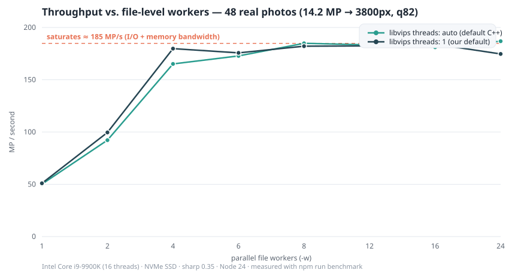

วิเคราะห์หาแนวทาง "ผลผลิตมากและเร็วที่สุด"
โจทย์: ย่อรูปทั้งโฟลเดอร์ (หลักพันรูป, หลายสิบ GB) เป็น JPG ยาวสุด ≤ 3800px — เอกสารนี้สรุปทางเลือก, เหตุผลการตัดสินใจ และข้อมูลวัดจริงที่ใช้เลือกค่า default
1 · เลือกเอนจิน: sharp (libvips)
| เอนจิน | ลักษณะ | คำตัดสิน |
|---|---|---|
| sharp / libvips | C++ ในตัว, เธรดเนทีฟ, streaming pipeline | เลือก — เร็วสุด, แรมน้อย, ติดตั้งง่าย (prebuilt binary ทุกแพลตฟอร์ม) |
| Jimp | JavaScript ล้วน | ช้ากว่า 10–50 เท่า — ใช้กับงานสิบ GB ไม่ได้ |
| node-canvas | Cairo binding | ติดตั้งยากบน Windows, ไม่ได้ออกแบบสำหรับ batch |
| ImageMagick CLI | process แยกต่อรูป | overhead spawn ต่อไฟล์, คุม concurrency/log ยาก |
ประเด็นสำคัญ: งานหนักทั้งหมดเกิดในเธรด C++ ของ libvips อยู่แล้ว — Node.js เป็นแค่ผู้จัดคิว การเร่งที่ถูกทางคือจัด concurrency ให้ถูกชั้น ไม่ใช่เพิ่ม worker_threads ของ JS
2 · โมเดล concurrency — คำถามวิจัยหลัก
มีเธรด 2 ชั้นที่ต้องเลือกให้ถูก: ชั้นไฟล์ (รูปกี่ไฟล์วิ่งพร้อมกัน — ตัวแปร -w)
และชั้นภายใน libvips (sharp.concurrency() — default ใช้คอร์ทั้งหมดต่อ operation)
การทดลอง
ภาพถ่ายจริงจากกล้อง 48 รูป (JPEG 4608×3072 = 14.2 MP, รวม 679 MP / 233 MB) ·
ย่อยาวสุด 3800px, JPEG q82 · Intel i9-9900K (16 เธรด), NVMe SSD, Node 24, sharp 0.35 ·
วัด 1–24 workers × libvips {auto, 1} โดยมี warm-up รอบหนึ่งให้ page cache สภาพเท่ากัน ·
ทำซ้ำได้ด้วย npm run benchmark

| workers | libvips=auto (MP/s) | libvips=1 (MP/s) | เร็วขึ้น ×1 worker |
|---|---|---|---|
| 1 | 50.2 | 51.0 | 1.0× |
| 2 | 92.2 | 99.6 | 2.0× |
| 4 | 165.1 | 179.8 | 3.6× |
| 6 | 172.8 | 175.7 | 3.5× |
| 8 | 184.8 | 182.1 | 3.7× |
| 12 | 183.4 | 182.4 | 3.7× |
| 16 | 181.1 | 184.1 | 3.7× |
| 24 | 186.8 | 174.7 | 3.7× |
สิ่งที่ข้อมูลบอก
ขนานได้เกือบเชิงเส้นถึง 4 workers
50 → 180 MP/s (×3.6) เพราะ decode/encode ต่อรูปเป็นงาน CPU-pure แยกกันได้ดี
อิ่มตัวที่ ~185 MP/s ตั้งแต่ 4–8
เพดานไม่ใช่ CPU แล้ว แต่เป็น I/O + memory bandwidth — decode 14.2 MP = raw 41 MB/รูปไหลผ่านแรม
libvips=1 ชนะตอน worker น้อย
w=2: +8%, w=4: +9% และเสมอกันตอนอิ่มตัว — ยืนยันสมมติฐาน oversubscription
default ที่เลือก
workers = จำนวนคอร์ + sharp.concurrency(1) — อยู่จุดอิ่มตัวพอดี แรมต่ำสุด ปรับตัวตามเครื่องอัตโนมัติ
3 · ทางลัดจาก libvips (เปิดใช้แล้ว)
| เทคนิค | ผล |
|---|---|
| fastShrinkOnLoad (default) | ลดขนาดที่ DCT-domain (1/2, 1/4, 1/8) ระหว่าง decode — ย่อ 6000→3800 เร็วขึ้นมาก คุณภาพต่างเล็กน้อยแทบมองไม่เห็น |
| sequentialRead: true | อ่านไฟล์เชิงเส้น ลด random I/O ตอนไฟล์ใหญ่ |
| fit=inside + withoutEnlargement | คำนวณมิติครั้งเดียว ไม่สเกลซ้ำ ไม่ขยายรูปเล็ก |
| failOn: 'none' | รูป header เน่าเล็กน้อยยังพยายามอ่าน — ไฟล์เสียไม่ทำชุดล้ม |
| atomic write (.part → rename) | ถูกขัดจังหวะกลางทางไม่มีไฟล์ครึ่ง ๆ — resume ได้จริง |
4 · ฝั่ง encode: ทำไม q82 + progressive
quality 82 + chroma 4:2:0 คือจุดต่ำสุดของเส้น quality/size ที่ตายากเห็น artifact ในภาพถ่าย (แนวปฏิบัติเดียวกับเว็บส่วนใหญ่: 75–85) — ชุดทดสอบเล็กลง 78% ที่ยาวสุด 3800px · progressive JPEG เล็กกว่า baseline เล็กน้อยและแสดงบนเว็บรู้สึกไวขึ้น · mozjpeg เล็กลงอีก ~25–30% แต่ช้าลง 2–3 เท่า จึงเป็น flag เสริม ไม่ใช่ default (โจทย์หลักคือเร็ว)
5 · ระดับชุดงาน
Resume-safe โดย default (ข้ามไฟล์ที่มีผลลัพธ์) · exclude โฟลเดอร์ output จากการสแกน · sort ชื่อไฟล์ให้ log เทียบข้ามรันได้ · log รวบในหน่วยความจำแล้ว flush ครั้งเดียว (ไม่มี I/O penalty ต่อไฟล์) · dry-run ประเมินเวลา/พื้นที่ก่อนลงมือ
6 · สิ่งที่พิจารณาแล้วไม่ทำ
| ทางเลือก | เหตุผล |
|---|---|
| Node.js worker_threads | งาน JS ต่อรูปเบามาก — IPC overhead กินเปล่า libvips ขนานเองใน C++ |
| Multi-process หลาย instance | ซับซ้อน แรมซ้ำ และเพดาน I/O ทำให้ไม่ได้ผลเพิ่ม |
| toBuffer() + เขียนเอง | เปลืองแรม — toFile() ของ sharp stream ลงดิสก์ตรง (ยัง atomic ผ่าน .part) |
| ปรับ quality อัตโนมัติตามเนื้อหา | ต้อง encode สองรอบ ช้าลงทั้งชุด — ให้ผู้ใช้เลือก q ดีกว่า |
| libvips threads = auto | ผลวัด: ช้ากว่าตอน worker น้อย เท่ากันตอนอิ่มตัว แรมพุ่ง |
npm run benchmark บนเครื่องตัวเองได้เลย